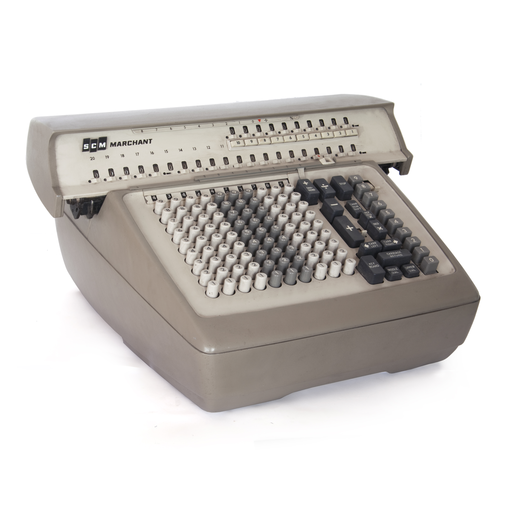

Создан компанией Marchant Calculating Machine Co. была основана в 1911 Родни и Альфредом Мэрчантом в Окленде, Калифорния.
Калькулятор Marchant-являлся первым массовым и при этом самым сложным калькулятором.
Компания построила механический, и затем электромеханические калькуляторы, у которых была репутация надежности. Первые модели были подобны арифмометру Odhner. В 1918 сотрудник Карл Фриден проектировал новую модель в ответ на доступные проблемы. Это был большой успех, и Фриден стал главным проектировщиком, пока он не покинул в 1934 найденному свою собственную компанию. В 1958 компания была приобретена компанией пишущей машинки Смита Короны в движении диверсификации, которое оказалось необоснованным; компания, которая была теперь известна как SCM, попыталась остаться конкурентоспособной, введя SCM Cogito электронный калькулятор на 240 ср (разработанный манхэттенским ветераном Проекта Стэном Франкелем) в 1965. В течение нескольких лет приливная волна более дешевых электронных калькуляторов опустошила их бизнес, и к середине 1980-х, бизнес пишущей машинки SCM, также, был разрушен появлением недорогих персональных компьютеров, используемых в качестве текстовых процессоров.